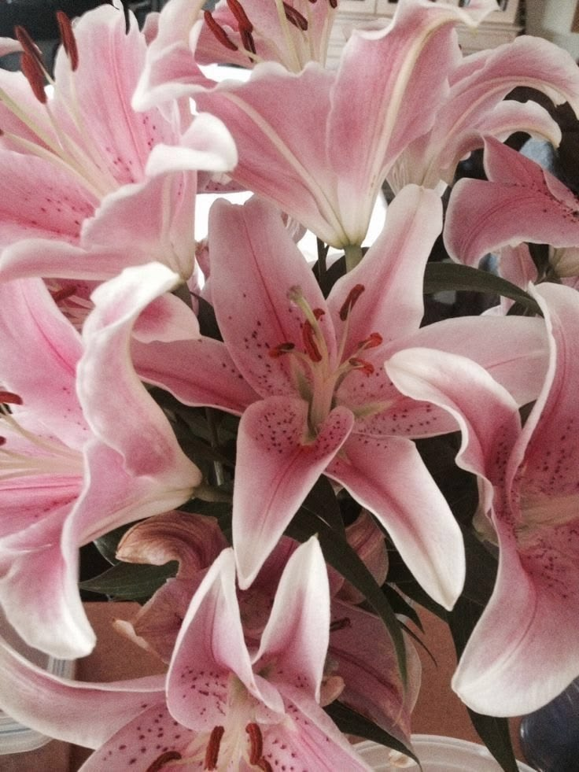
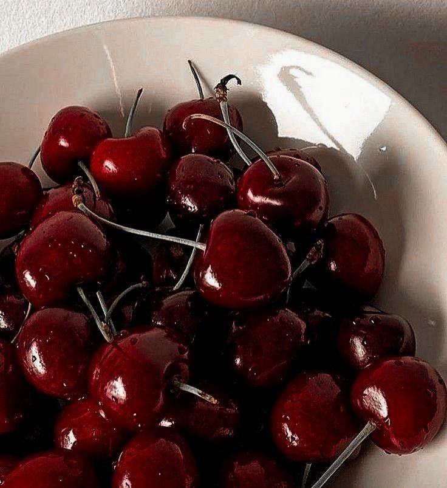

I'm Heer, a curious soul passionate about exploring new ideas and connecting with people. I believe in living authentically and finding joy in the little things.
I have always been drawn to Astrophysics. Our bodies are made of stardust and to learn about that stardust feels like discovering the universe within ourselves.

Its one of my favorite flowers. I love the way they bloom and their delicate beauty. They remind me to appreciate the simple things in life and to find joy in the present moment.

I’ve always loved cherries for their bright color, sweet taste, and simple beauty. They’re one of those little things that I’ve naturally grown fond of and always enjoy.